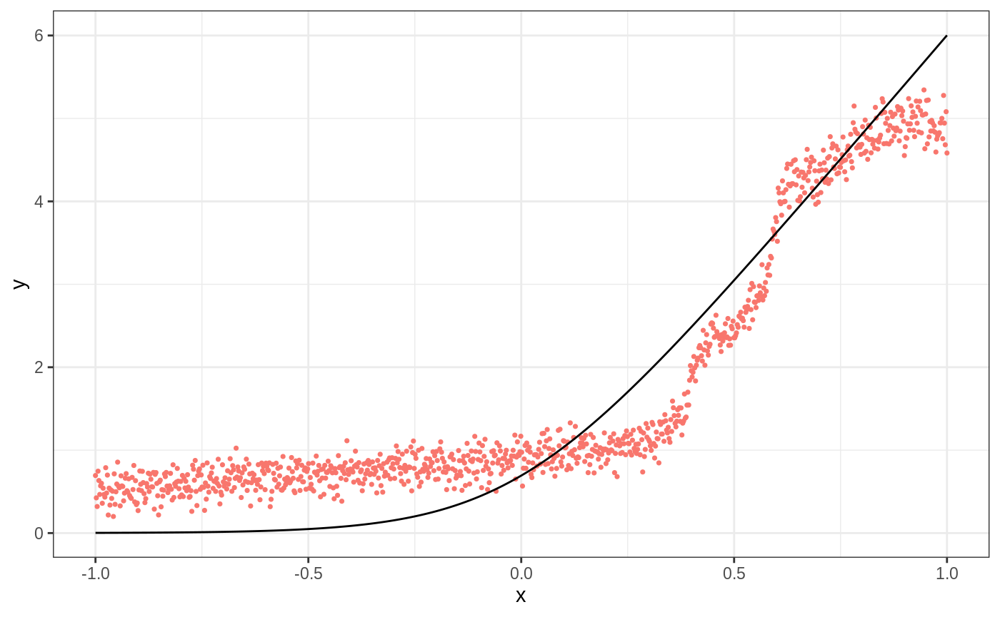
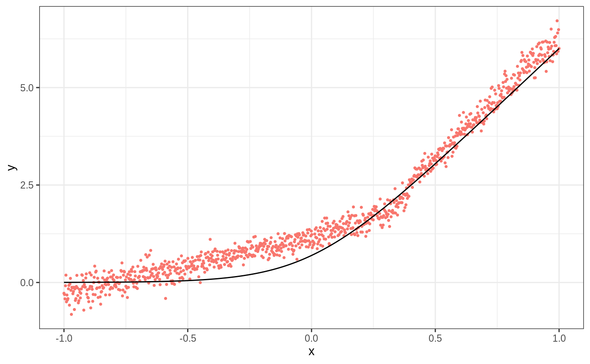
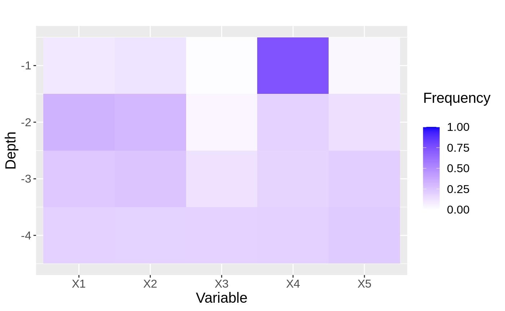
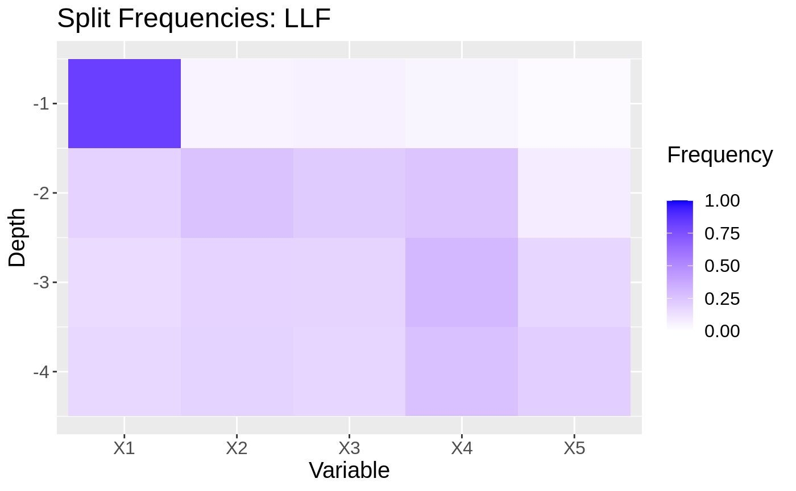
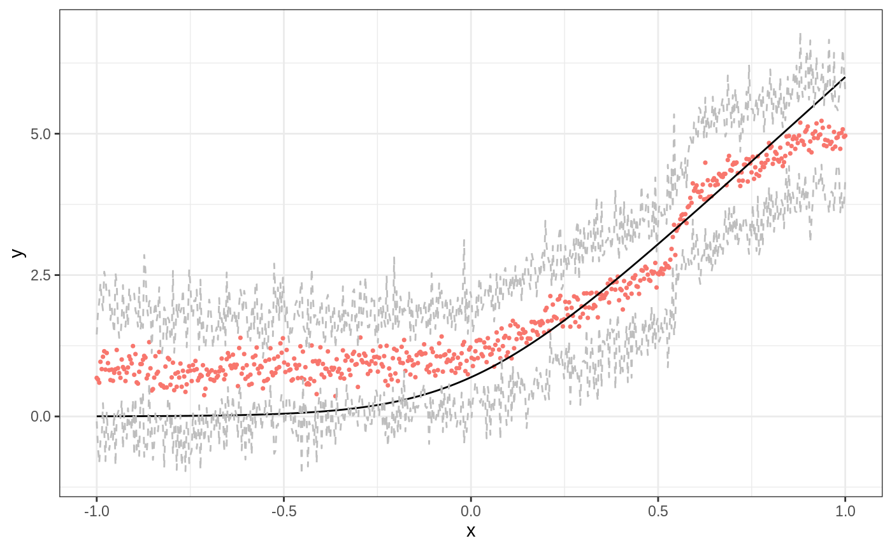

This document aims to show how to use local linear forests (LLF). We begin with the standard use case, walking through parameter choices and method details, and then discuss how to use local linear corrections with larger datasets.
Random forests are a popular and powerful nonparametric regression method, but can suffer in the presence of strong, smooth effects. Local linear regression is a great method for fitting relatively smooth functions in low dimensions, but quickly deteriorates due to the curse of dimensionality: it relies on Euclidean distance, which fast loses its locality even in 4 or 5 dimensions. This algorithm leverages the strengths of each method (the data adaptivity of random forests and smooth fits of local linear regression) to give improved predictions and confidence intervals. For a complete treatment of local linear forests (LLF), see our paper on ArXiv.
Consider a random forest with \(B\) trees predicting at a test point \(x_0\). In each tree \(b\), the test point falls into a leaf \(L_b(x_0)\). A regression forest predicts by averaging all responses in \(L_b(x_0)\), and then averaging those predictions \(\hat{\mu}_b(x_0)\) over all trees. To gain a new perspective on random forests, we can swap the sum to start thinking about random forests as a kernel or weighting method in high dimensions.
\[\begin{align*} \hat{\mu}(x_0) &= \frac1B \sum_{b=1}^B \sum_{i=1}^n Y_i \frac{1\{x_i\in L_b(x_0)\}}{|L_b(x_0)|}\\ &= \sum_{i=1}^n Y_i \frac1B \sum_{b=1}^B \frac{1\{x_i\in L_b(x_0)\}}{|L_b(x_0)|} \\ &= \sum_{i=1}^n \alpha_i(x_0) Y_i, \end{align*}\] where the forest weight \(\alpha_i(x_0)\) is the fraction of trees in which an observation appears in the same leaf as the target value of the covariate vector. \[\begin{equation} \alpha_i(x_0) = \frac1B \sum_{b=1}^B \frac{1\{x_i\in L_b(x_0)\}}{|L_b(x_0)|} \end{equation}\]
Local linear forests take this one step further: now, instead of using the weights to fit a local average at \(x_0\), we use them to fit a local linear regression, with a ridge penalty for regularization. This amounts to solving the minimization problem below, with parameters: \(\mu(x)\) for the local average, and \(\theta(x)\) for the slope of the local line. \[\begin{equation} \begin{pmatrix} \hat{\mu}(x_0) \\ \hat{\theta}(x_0) \end{pmatrix} = \text{argmin}_{\mu,\theta} \left\{\sum_{i=1}^n \alpha_i(x_0) \left(Y_i - \mu(x_0) - (x_i - x_0)\theta(x_0) \right)^2 + \lambda ||\theta(x_0)||_2^2\right\} \end{equation}\]
This enables us to (i) use local linear regression in high dimensions with a meaningful kernel, and (ii) predict with random forests even in the presence of smooth, strong signals.
We start with a simple example illustrating when local linear forests can improve on random forests.
p <- 20 n <- 1000 sigma <- sqrt(20) mu <- function(x){ log(1 + exp(6 * x)) } X <- matrix(runif(n * p, -1, 1), nrow = n) Y <- mu(X[,1]) + sigma * rnorm(n) X.test <- matrix(runif(n * p, -1, 1), nrow = n) ticks <- seq(-1, 1, length = n) X.test[,1] <- ticks truth <- mu(ticks) forest <- regression_forest(X, Y) preds.forest <- predict(forest, X.test)$predictions df <- data.frame(cbind(ticks, truth, preds.forest)) g1 <- ggplot(df, aes(ticks)) + geom_point(aes(y = preds.forest, color = "Regression Forest"), show.legend = F, size = 0.6) + geom_line(aes(y = truth)) + xlab("x") + ylab("y") + theme_bw() g1

ll.forest <- ll_regression_forest(X, Y, enable.ll.split = TRUE) preds.llf <- predict(ll.forest, X.test, linear.correction.variables = 1)$predictions df.llf <- data.frame(cbind(ticks, truth, preds.llf)) g2 <- ggplot(df.llf, aes(ticks)) + geom_point(aes(y = preds.llf, color = "Local Linear Forest"), show.legend = F, size = 0.6) + geom_line(aes(y = truth)) + xlab("x") + ylab("y") + theme_bw() g2

There are several modifications to discuss. We begin by listing out the subset of training parameters specific to local linear forests (users can also consider regression_forest tuning parameters, all of which apply here as well).
| Parameters | Value Options | Default Value | Details |
|---|---|---|---|
| Training Parameters | |||
| enable.ll.split | TRUE/FALSE | FALSE | Optional choice to make forest splits based on ridge residuals as opposed to standard CART splits. |
| ll.split.weight.penalty | TRUE/FALSE | FALSE | If using local linear splits, user can specify whether to standaridze the ridge penalty by covariance (TRUE), or penalize all covariates equally (FALSE). |
| ll.split.lambda | Non-negative double | 0.1 | Ridge penalty for splitting. |
| ll.split.variables | Vector of covariate indexes | 1:p | Variables to use in split regressions. |
| ll.split.cutoff | Integer between 0 and n. | Square root of n. | If greater than 0, when leaves reach this size, forest uses regression coefficients from the full dataset for ridge regressions during tree training. If equal to 0, trees run a regression in each leaf. |
| Prediction parameters | |||
| ll.lambda | Non-negative double | Tuned by default. | Ridge penalty for prediction. |
| ll.weight.penalty | TRUE/FALSE | FALSE | Standardize ridge penalty by covariance (TRUE), or penalize all covariates equally (FALSE). |
| linear.correction.variables | Vector of covariate indexes | 1:p | Subset of indexes for variables to be used in local linear prediction. |
n <- 600 p <- 20 sigma <- sqrt(20) mu <- function( x ) { 10 * sin(pi * x[1] * x[2]) + 20 * ((x[3] - 0.5) ** 2) + 10 * x[4] + 5 * x[5] } X <- matrix(runif(n * p, 0, 1), nrow = n) Y <- apply(X, FUN = mu, MARGIN = 1) + sigma * rnorm(n) X.test <- matrix(runif(n * p, 0, 1), nrow = n) truth = apply(X.test, FUN = mu, MARGIN = 1) # regression forest predictions rforest <- regression_forest(X, Y, honesty = TRUE) results <- predict(rforest, X.test) preds <- results$predictions mean((preds - truth)**2) #> [1] 8.638002
We can get LLF predictions both from a standard regression forest by specifying linear correction variables, or from a ll_regression_forest object. The parameter linear correction variables gives the variables to use for the final local regression step. This can simply be all variables, or might be a subset.
# llf predictions from regression_forest results.llf <- predict(rforest, X.test, linear.correction.variables = 1:p) preds.llf <- results.llf$predictions mean((preds.llf - truth)**2) #> [1] 5.744372 # llf predictions from ll_regression_forest forest <- ll_regression_forest(X, Y, honesty = TRUE) results.llf <- predict(forest, X.test) preds.llf <- results.llf$predictions mean((preds.llf - truth)**2) #> [1] 5.752372
When we perform LLF predictions, we can either do a standard ridge regression (ll.weight.penalty set to FALSE), or scale by the covariance matrix (ll.weight.penalty set to TRUE): \(\hat{\beta}_\text{TRUE} = (X'AX (1 + \lambda))^{-1} X'AY\). This defaults to FALSE.
results.llf.unweighted <- predict(forest, X.test, ll.weight.penalty = FALSE) preds.llf.unweighted <- results.llf.unweighted$predictions mean((preds.llf.unweighted - truth)**2) #> [1] 5.752372 results.llf.weighted <- predict(forest, X.test, ll.weight.penalty = TRUE) preds.llf.weighted <- results.llf.weighted$predictions mean((preds.llf.weighted - truth)**2) #> [1] 5.708388
We also consider the role of tree training in local linear forests. A standard CART split minimizes prediction error from predicting leaf-wide averages. Instead, we can use residual splits, which minimize the corresponding prediction errors on ridge regression residuals. We might expect this to help in cases where there are strong linear signals from some covariates; we won’t waste any forest splits modelling those, but can still discover them in the final regression step. Essentially this helps us make the most efficient possible splits in the forest, knowing that we have a local regression coming up to predict. This is currently an experimental feature.
forest <- ll_regression_forest(X, Y) preds.cart.splits <- predict(forest, X.test) ll.forest <- ll_regression_forest(X, Y, enable.ll.split = TRUE, ll.split.weight.penalty = TRUE) preds.ll.splits <- predict(ll.forest, X.test) mse.cart.splits <- mean((preds.cart.splits$predictions - truth)^2) mse.ll.splits <- mean((preds.ll.splits$predictions - truth)^2) mse.cart.splits #> [1] 5.81383 mse.ll.splits #> [1] 4.734676
To uncover exactly why this works, we can look at plots showing the split frequencies of both forests. In each plot, tiles represent how many splits at at given level (y-axis) of the tree were at each feature (x-axis).
p <- 5 XX <- matrix(runif(n * p, 0 ,1), nrow = n) YY <- apply(XX, MARGIN = 1, FUN = mu) + sigma * rnorm(n) forest2 <- regression_forest(XX, YY) max.depth <- 4 freqs <- split_frequencies(forest2, max.depth = max.depth) d <- data.frame(freqs) dm <- data.frame(variable = sort(rep(names(d), nrow(d))), value = as.vector(as.matrix(d)), depth = rep(1:max.depth, p)) # normalize value by sum of value at depth for(i in 1:max.depth){ tot.depth <- sum(dm[dm$depth == i,]$value) dm[dm$depth == i,]$value <- dm[dm$depth == i,]$value / tot.depth } g<- ggplot(dm, aes(x = variable, y = -depth, fill = value)) + geom_tile() + xlab("Variable") + ylab("Depth") + scale_fill_gradient(low = "white", high = "blue",limits = c(0,1), "Frequency \n") + ggtitle("") + theme(text = element_text(size = 15)) g

ll.forest2 <- ll_regression_forest(XX, YY, enable.ll.split = TRUE, ll.split.weight.penalty = TRUE) freqs <- split_frequencies(ll.forest2, max.depth = max.depth) d <- data.frame(freqs) dm <- data.frame(variable = sort(rep(names(d), nrow(d))), value = as.vector(as.matrix(d)), depth = rep(1:max.depth, p)) for(i in 1:max.depth){ tot.depth <- sum(dm[dm$depth == i,]$value) dm[dm$depth == i,]$value <- dm[dm$depth == i,]$value / tot.depth } g2 <- ggplot(dm, aes(x=variable, y=-depth, fill = value)) + geom_tile() + xlab("Variable") + ylab("Depth") + scale_fill_gradient(low = "white", high = "blue", limits = c(0,1), "Frequency \n") + ggtitle("Split Frequencies: LLF") + theme(text = element_text(size = 15)) g2

The user can choose to specify a ridge regression parameter ll.lambda. When this variable is not set by the user, it will be selected by automatic parameter tuning. In general, we recommend letting the forest tune this parameter, or performing your own cross-validation loop. The exception to this would be for very large datasets.
results.llf.lambda <- predict(forest, X.test, ll.lambda = 0.1) preds.llf.lambda <- results.llf.lambda$predictions mean((preds.llf.lambda - truth)**2) #> [1] 5.81383 results.llf.lambda <- predict(forest, X.test) # automatic tuning preds.llf.lambda <- results.llf.lambda$predictions mean((preds.llf.lambda - truth)**2) #> [1] 5.81383
Especially with many covariates, it is reasonable to restrict the local regression to only include a few features of interest. We recommend using the lasso.
# Train forest forest <- ll_regression_forest(X, Y) # Select covariates lasso.mod <- cv.glmnet(X, Y, alpha = 1) lasso.coef <- predict(lasso.mod, type = "nonzero") selected <- lasso.coef[,1] selected #> [1] 1 2 4 5 # Predict with all covariates llf.all.preds <- predict(forest, X.test) results.all <- llf.all.preds$predictions mean((results.all - truth)**2) #> [1] 5.782246 # Predict with just those covariates llf.lasso.preds <- predict(forest, X.test, linear.correction.variables = selected) results.llf.lasso <- llf.lasso.preds$predictions mean((results.llf.lasso - truth)**2) #> [1] 4.7916
Last, consider variance estimates and confidence intervals, which are analogous to grf variance estimates. We use our first data-generating process for easier visualization.
mu <- function(x){ log(1 + exp(6 * x)) } p <- 20 X <- matrix(runif(n * p, -1, 1), nrow = n) Y <- mu(X[,1]) + sigma * rnorm(n) X.test <- matrix(runif(n * p, -1, 1), nrow = n) ticks <- seq(-1, 1, length = n) X.test[,1] <- ticks truth <- mu(ticks) # Select covariates lasso.mod <- cv.glmnet(X, Y, alpha = 1) lasso.coef <- predict(lasso.mod, type = "nonzero") selected <- lasso.coef[,1] selected #> [1] 1 ll.forest <- ll_regression_forest(X, Y, enable.ll.split = TRUE) results.llf.var <- predict(ll.forest, X.test, linear.correction.variables = selected, estimate.variance = TRUE) preds.llf.var <- results.llf.var$predictions variance.estimates <- results.llf.var$variance.estimates # find lower and upper bounds for 95% intervals lower.llf <- preds.llf.var - 1.96*sqrt(variance.estimates) upper.llf <- preds.llf.var + 1.96*sqrt(variance.estimates) df <- data.frame(cbind(ticks, truth, preds.llf.var, lower.llf, upper.llf)) ggplot(df, aes(ticks)) + geom_point(aes(y = preds.llf.var, color = "Local Linear Forest"), show.legend = F, size = 0.6) + geom_line(aes(y = truth)) + geom_line(aes(y = lower.llf), color = "gray", lty = 2) + geom_line(aes(y = upper.llf), color = "gray", lty = 2) + xlab("x") + ylab("y") + theme_bw()

Although generally local linear forests are an improvement over regular random forests, when the number of dimensions is very high, training and predicting using them can take long time. This is because with n_train and n_test train and test points, we are running n_test regressions with n_train data points each. However, sometimes we still want to use random forests and correct for linear trends. In this case (datasets with roughly 100,000 or more observations, although always context-dependent), selecting a small number linear correction variables is especially important. The current ridge parameter tuning will also take prohibitively long, and so we recommend either setting the value to 0.01 consistently, tuning this on a subset of the data, restricting the range of values considered, or cross-validating using a small number of shallow trees.
| Parameters | Value Options | Default Value | Performance as n,p increase |
|---|---|---|---|
| Training Parameters | |||
| enable.ll.split | TRUE/FALSE | FALSE | For large n and p, ridge regressions in each leaf will take an especially long time. We therefore recommend either not using this feature, or setting the tuning parameters discussed below carefully. Please also note that this is still an experimental feature. |
| ll.split.weight.penalty | TRUE/FALSE | FALSE | Unaffected |
| ll.split.lambda | Non-negative double | 0.1 | Unaffected |
| ll.split.variables | Vector of covariate indexes | 1:p | For large p (over 50), we recommend either limiting ll.split.variables to a subset, using CART splits, or enforcing a reasonably large split cutoff (below). |
| ll.split.cutoff | Integer between 0 and n. | Square root of n. | Increasing this parameter can help to speed up LL splits, and is recommended for users who want to use LL splits when training forests with large data. |
| Prediction parameters | |||
| ll.lambda | Non-negative double | Tuned by default. | Tuning by default takes a long time with large datasets, and we recommend either writing your own, shorter cross-validation loop, or setting ll.lambda to a default value around 0.1 instead of using automatic tuning. |
| ll.weight.penalty | TRUE/FALSE | FALSE | Unaffected |
| linear.correction.variables | Vector of covariate indexes | 1:p | Limiting linear correction variables is a crucial step for efficient predictions as n, p increase. We highly recommend using a lasso, stepwise regression, prior knowledge, etc. to select a fairly small number of linear correction variables for LLF prediction in this case. |
The following code is set to not run currently; users can expect it to take approximately 5-6 minutes. LLF predictions with all p variables will be very slow, as will automatic tuning with this scale of data. However, we can still use linear corrections, just with more careful parameters. Users can increase the number of trees for better performance from both methods.
# generate data n <- 5e5 p <- 20 sigma <- sqrt(20) f <- function(x){ 10 * sin(pi * x[1] * x[2]) + 10 * (x[3] - 0.5)**2 + 10 * x[4] + 5 * x[5] } X <- matrix(runif(n * p, 0, 1), nrow = n, ncol = p) Y <- apply(X, MARGIN = 1, FUN = f) + sigma * rnorm(n) X.test <- matrix(runif(n * p, 0, 1), nrow = n, ncol = p) truth.test <- apply(X.test, MARGIN = 1, FUN = f) ptm <- proc.time() forest <-regression_forest(X, Y, tune.parameters = "none", num.trees = 50) time.train <- (proc.time() - ptm)[[3]] ptm <- proc.time() preds.grf <- predict(forest, X.test)$predictions mse.grf <- mean((preds.grf - truth.test)**2) time.grf <- (proc.time() - ptm)[[3]] ptm <- proc.time() ll.forest <- ll_regression_forest(X, Y, tune.parameters = "none", enable.ll.split = TRUE ,num.trees = 50) time.train.ll <- (proc.time() - ptm)[[3]] ptm <- proc.time() lasso.mod <- cv.glmnet(X, Y, alpha = 1) lasso.coef <- predict(lasso.mod, type = "nonzero") selected <- lasso.coef[,1] selected time.lasso <- (proc.time() - ptm)[[3]] ptm <- proc.time() preds.llf <- predict(ll.forest, X.test, linear.correction.variables = selected, ll.lambda = 0.1)$predictions mse.llf <- mean((preds.llf - truth.test)**2) time.llf <- (proc.time() - ptm)[[3]] cat(paste("GRF training took", round(time.train, 2), "seconds. \n", "GRF predictions took", round(time.train.ll, 2), "seconds. \n", "LLF training took", round(time.grf, 2), "seconds. \n", "Lasso selection took", round(time.lasso, 2), "seconds. \n", "LLF prediction took", round(time.llf, 2), "seconds. \n", "LLF and lasso all in all took", round(time.lasso + time.llf, 2), "seconds. \n")) # GRF training took 342.14 seconds # LLF training took 215.64 seconds # GRF predictions took 20.25 seconds # Lasso selection took 15.10 seconds # LLF prediction took 45.40 seconds # LLF and lasso all in all took 60.50 seconds cat(paste("GRF predictions had MSE", round(mse.grf, 2), "\n", "LLF predictions had MSE", round(mse.llf, 2))) # GRF predictions had MSE 0.81 # LLF predictions had MSE 0.69